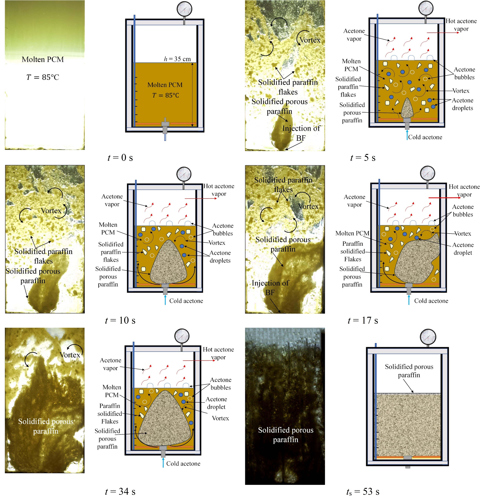
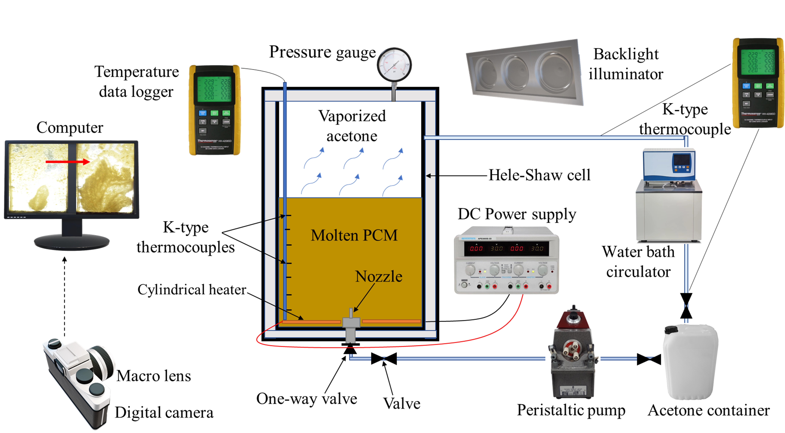

Ultra-fast solidification of phase change materials
In this project, we explored the effect of the injection of a boiling fluid on the solidification process of phase change materials
Despite their remarkable properties, phase change materials (PCMs) are hindered by low thermal conductivity, which slows their phase change processes and limits their applicability in energy storage and thermal management systems. To address this challenge, we propose an innovative approach that utilizes boiling heat transfer to significantly enhance the solidification rate of PCMs. In this method, a jet of boiling fluid (BF) is directed into the molten PCM. Acetone serves as the boiling fluid, while paraffin is selected as the PCM.
Upon contact with the molten paraffin, the acetone boils, facilitating the solidification of paraffin. Additionally, the BF jet generates vigorous vortices within the container, promoting mixing within the container. The dynamic interaction between the acetone jet and the molten paraffin causes the jet to become susceptible to disturbances, leading to atomization into fine droplets that increase the heat exchange surface area. Collectively, these mechanisms contribute to the ultra-fast solidification of the PCM.
The results demonstrate that the current method significantly reduces the full solidification time by several orders of magnitude compared to previous studies. Specifically, the injection of boiling fluid can decrease the solidification time by three orders of magnitude relative to pure PCM without additives. Additionally, the solidification process is, on average, 36 times shorter than conventional direct contact methods using a liquid as the heat transfer fluid (HTF). Furthermore, the full freezing time is reduced by at least 63 times compared to PCMs enhanced with fins, metal foams, and nanoparticles. Under optimal conditions, the proposed technique can freeze 0.7, 0.5, and 0.3 liters of paraffin in 48, 33, and 18 seconds, respectively.In addition, the rapid temperature reduction achieved by this method highlights its potential for application in thermal management systems for electronic and electrochemical devices under high heat flux conditions. This approach has been patented as an innovative cooling system that incorporates two simultaneous phase change processes.

The real and schematic views of the process over time.The real image of the experimental setup.The schematic view of the experimental setup.
This research presents a novel analytical methodology for designing a phase change cooling pack for cylindrical lithium-ion batteries. This innovative approach not only prioritizes efficient thermal management of these batteries but also incorporates essential considerations regarding the weight and dimensions of the cooling system. Our objective is to develop a cooling solution that achieves optimal efficiency while ensuring a compact and lightweight design.
This study provides a comprehensive review of hybrid battery thermal management systems (HBTMSs), with a focus on those that integrate at least one phase transition process alongside other passive or active methods. Additionally, the advantages and disadvantages of each type of HBTMS are carefully evaluated and summarized within their respective sections. The categorized information and insights presented in this study serve as a valuable resource for designing cost-effective, high-efficiency, and environmentally friendly HBTMSs.
Integrating solar energy into desalination processes provides a cost-effective and efficient solution. Additionally, by reducing the saturated temperature of water vapor through pressure reduction, energy consumption can be minimized, and evaporation rates can be improved. This study investigates the performance of a novel venturi system integrated with an evacuated tube collector (ETC) that facilitates simultaneous low-pressure evaporation and condensation.
This study examines the influence of ternary hybrid nanoparticles (TiO2-MgO-GO) on the hydrothermal performance of a mini-channel heat sink with various channel configurations. Furthermore, it explores the effects of different types of hybrid nanoparticles characterized by distinct shape factors, including spherical nanoparticles (sf = 3), platelets (sf = 5.7), blades (sf = 8.6), and laminae (sf = 16.1576).
This investigation evaluates the hydrothermal performance of a shell-and-tube heat exchanger equipped with blade turbulators arranged in various configurations.
This study thoroughly investigates the hydrodynamics of a ferrofluid compound droplet during its migration in a microchannel under the presence of a pressure-driven flow and a uniform external magnetic field to manipulate its morphology and retard its breakup.
In this study, the effects of radiative heat transfer and hybrid nanoparticles on the solidification process of phase change materials within a triplex tube with hollow fins are examined computationally.
By employing Particle Image Velocimetry (PIV), the velocity field was obtained for several fluid mechanics phenomena, including mixing, natural convection, droplet impact, and jet ejection.
By employing Laser Induced Fluorescence (LIF) and utilizing two distinct calibration methods, the distribution of temperature and concentration was obtained for the injection of cold fluid into a hot ambient fluid.